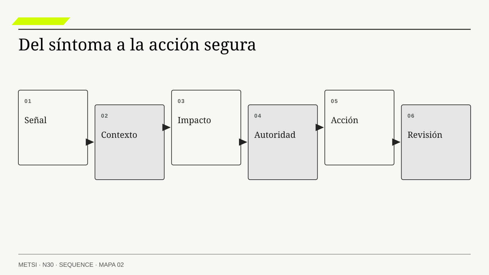

Fernando Flores
Creando organizaciones para el futuroDolmen · 1997
Permite relacionar señales con promesas, decisiones y reparaciones. Su aporte evita declarar cumplido un servicio porque terminó una tarea técnica.

Observar un servicio exige señales que permitan inferir la promesa y actuar antes de normalizar la degradación.
Detectar problemas, responder a tiempo y aprender de lo que pasó
Ruta priorizada: 1 h 20 min a 1 h 40 min. Núcleo de lectura: 60 a 75 min; preparación: 20 a 25 min. Las extensiones agregan 30 a 45 min y profundizan el recorrido.

Nota. SIN NUM. identifica aparatos de orientación y referencia.
Seis referentes y las obras principales utilizadas para construir N30.
Permite relacionar señales con promesas, decisiones y reparaciones. Su aporte evita declarar cumplido un servicio porque terminó una tarea técnica.

Exige distinguir indicadores y explicaciones. Ayuda a preguntar qué mecanismo conecta el dato observado con la consecuencia que queremos cambiar.

Analiza controles e interacciones del sistema. Permite investigar daño sin suponer que todo se explica por un componente o una persona aislados.

Junto con Boone, distingue contextos que requieren formas diferentes de actuar y aprender. No todo incidente permite esperar un diagnóstico completo antes de estabilizar.

Aporta una mirada sobre voz y seguridad psicológica. La información sobre errores y dudas necesita condiciones para circular y modificar decisiones.

Participa en marcos de respuesta y gestión del riesgo de ciberseguridad. Su trabajo ayuda a conectar preparación, detección, coordinación y aprendizaje dentro de ese ámbito.
N30 no resume estas fuentes ni las convierte en receta. Las pone en tensión para construir juicio profesional.
¿Cómo sabemos que el servicio sigue funcionando para las personas, y cómo usamos una falla para mejorar algo más que el tablero?

Telemetría sin una decisión y una autoridad para actuar no vuelve observable la promesa.
Imaginá un hospital ficticio. El laboratorio, la historia clínica y el tablero de guardia están conectados. Una madrugada, los servidores funcionan y los mensajes se procesan. Los paneles técnicos no muestran problemas importantes. Sin embargo, tres resultados críticos no aparecen donde el equipo clínico necesita consultarlos.
La primera advertencia llega por teléfono. Una profesional del laboratorio observa que falta confirmación del equipo receptor y se comunica con la guardia. Tecnología mira los paneles: todos parecen normales. No puede responder de inmediato dónde quedaron los resultados.
Cada componente había informado su parte. El laboratorio registró el envío; un intermediario aceptó el mensaje; otro sistema respondió sin error. Pero ninguna señal reunía el recorrido que importaba: resultado validado, asociado al episodio correcto, disponible para el rol autorizado y tratado según el procedimiento clínico correspondiente.
Abrir una pantalla tampoco demuestra que alguien comprendió o utilizó la información. Para evaluar ese último tramo hacen falta criterios y responsabilidades clínicas. Este caso es un ejercicio de sistemas, no un protocolo de atención ni una propuesta de tiempos médicos.
El equipo conserva varias explicaciones. Tal vez el mensaje tarda en propagarse. Tal vez está relacionado con otro episodio. Tal vez una regla de visualización lo oculta. O quizá el tablero llama «entregado» a una recepción técnica que no demuestra disponibilidad clínica. Mirar más gráficos del mismo componente no necesariamente distingue esas posibilidades.
La investigación relaciona identificadores, tiempos, estados y acciones. También escucha a quienes atendieron el turno. Algunas llamadas y verificaciones no habían dejado un evento digital, aunque habían sido decisivas para responder.
Después se define una señal del recorrido. El equipo clínico establece qué hechos debe representar y qué demoras son relevantes; Tecnología determina cómo capturarlos con suficiente calidad y protección de datos. Los casos sin clasificación confiable no se eliminan para mejorar el porcentaje: se informan como una limitación y se atienden por una vía segura.
La alerta también cambia. No dice simplemente «algo está raro». Identifica la condición observada, qué información falta, quién puede actuar y cuál es la primera acción autorizada. Si la persona habitual no está, existe un reemplazo y un modo de escalar.
El aprendizaje no termina al agregar esa alerta. El equipo prueba que llegue, que se entienda y que permita una respuesta útil. También revisa qué produjo el problema original. Detectar antes una falla es una mejora; evitar su repetición puede requerir otra intervención.
N30 trata de esa capacidad completa: observar, comprender, responder y aprender. No de tener cada vez más datos sobre un servicio que nadie puede explicar cuando empieza a fallar.
HH-30 sigue la liberación controlada de HH-29. Los tableros de identidad, PMS y cerraduras informan disponibilidad superior al 99,9 por ciento. Lucía, en cambio, registra siete ingresos con más de quince minutos de espera.

No sabemos la tasa de esas demoras sin conocer el total de ingresos y su ventana. Pero los siete episodios alcanzan para formular una pregunta: ¿qué parte de la llegada no representan los tableros?
Camila ve reservas confirmadas. Mariela ve habitaciones con limpieza terminada. Federico ve respuestas técnicas exitosas. Ninguna de esas señales demuestra, por sí sola, que la persona obtuvo una habitación adecuada y un acceso operativo sin dificultades pendientes.
Ricardo reúne una línea temporal: solicitudes, respuestas, reintentos, llamados, decisiones manuales y reasignaciones. El servicio de identidad respondía, pero durante el pico lo hacía demasiado tarde para el recorrido. Además, los reintentos agregaban mensajes. Responder sin error no significaba responder a tiempo ni resolver la llegada.
El equipo mantiene explicaciones rivales. Puede faltar capacidad; puede estar mal ajustado el tiempo de espera acordado; puede haber una política de reintentos que amplifica la carga. Las tres pueden contribuir. La investigación debe distinguirlas antes de decidir qué cambio hará falta.
Se define una señal del ingreso completo, con cortes por canal, turno y necesidades relevantes. También se conservan señales técnicas para localizar problemas. No se reemplazan todos los tableros por un único número: se conectan preguntas diferentes.
Elena acuerda una regla protectora: una falla severa de accesibilidad detiene la ampliación aunque el porcentaje general siga siendo favorable. El objetivo cuantitativo ayuda a gobernar confiabilidad, pero no compra permiso para ignorar ese daño.
Cada alerta tiene destinatario, reemplazo y acción posible. Cada corrección posterior tiene una hipótesis y una forma de comprobarla. La revisión se programa a cuatro semanas, con acción anticipada ante un incidente de impacto alto. El período ordena el seguimiento; no exige esperar frente a un problema conocido.
Un servicio se vuelve comprensible cuando sus señales permiten responder preguntas sobre lo que les ocurre a las personas. No alcanza con saber que un servidor responde. Necesitamos saber si el resultado esperado se produjo, dónde se interrumpió y quién puede intervenir.
Pensá en una canilla. Que haya agua en el tanque no demuestra que salga agua donde la necesitás. Puede estar cerrada una llave, obstruido un tramo o roto el caño. El nivel del tanque es una señal útil, pero no responde todas las preguntas.
En un sistema de información sucede algo parecido, con más pasos y participantes. Métricas, registros y trazas ayudan a reconstruir actividad. Necesitan definiciones y contexto para no confundir un mensaje recibido con un servicio cumplido.
Los objetivos de servicio ordenan qué nivel queremos sostener y qué decisiones tomaremos si empieza a degradarse. Las alertas convierten ciertas señales en una convocatoria a actuar. Una revisión posterior permite comprobar si la respuesta trató el mecanismo o sólo apagó un síntoma.
Nada de eso es automático por tener una plataforma. Un aviso puede llegar tarde o a alguien sin permisos. Un objetivo puede ocultar un grupo perjudicado. Una acción puede marcarse completa sin haber mejorado nada. Por eso también se evalúa el sistema de observación y respuesta.
La operación produce aprendizaje cuando modifica lo que creemos o hacemos y permite contrastarlo después. A veces confirma que la política existente era adecuada; otras obliga a cambiar un contrato, una regla o una promesa. No se exige cambiar algo por ceremonia: se exige que la revisión tenga consecuencias justificadas y verificables.
![La disponibilidad técnica no cuenta toda la experiencia del servicio. Señal técnica Latencia, reintentos y resultados desconocidos. Indica cómo responden los componentes. Recorrido Reserva, asignación y llave. Permite seguir una llegada de principio a fin. Negocio Ingreso, contingencia y compensación. Muestra si se sostiene la promesa del hotel. Experiencia Espera, accesibilidad y ayuda. Hace visible lo que la persona pudo completar. Medir llave funcional en diez minutos, sin reasignación indebida y con acceso prometido. Alertar, asignar autoridad, contener y aprender; no sólo enviar mensajes.](diagrams/N30-mapa-legible.svg)
N26 mostró dependencias entre áreas y proveedores. N27 precisó qué debían significar sus intercambios. N28 definió evidencia de calidad. N29 organizó la liberación y recuperación. N30 completa el bloque F observando si el servicio real sostiene esas decisiones.
La versión y configuración registradas en N29 ayudan a investigar, pero no prueban que cualquier problema posterior haya sido causado por el último cambio. También varían demanda, personal y dependencias. Hay que conservar explicaciones alternativas.
N31 abrirá la discusión sobre IA. Disponer de datos y señales no significa que deba automatizarse una decisión. Antes habrá que preguntar qué capacidad se necesita, qué aporta respecto de una alternativa más simple y con qué autoridad puede actuar.
Los trabajos de Site Reliability Engineering, o SRE, relacionan indicadores, objetivos y decisiones de confiabilidad. Aportan una forma de discutir qué nivel de servicio se busca y cómo reaccionar cuando se deteriora. No convierten una cifra en medida completa del bienestar de las personas.
OpenTelemetry ofrece convenciones y mecanismos para trabajar con señales técnicas. DORA estudia desempeño de entrega de software. Son lentes distintos: una traza de un ingreso, un indicador de servicio y una medida de despliegues no representan el mismo objeto.
NIST SP 800-61r3 integra respuesta a incidentes de ciberseguridad con gestión de riesgo. Ese ámbito no debe confundirse con todos los incidentes del hotel, aunque preguntas sobre preparación, coordinación y recuperación también ayuden a organizar la respuesta. [NIST SP 800-61r3](https://
Allspaw estudia decisiones bajo presión. Hollnagel invita a mirar también cómo el trabajo cotidiano suele salir bien, gracias a adaptaciones que un procedimiento no describe por completo. Leveson analiza controles e interacciones. Woods aporta una mirada sobre la capacidad de responder cuando la situación exige más de lo previsto.
Edmondson agrega una condición: para aprender, las personas necesitan poder informar problemas y dudas. Flores, Bunge y García ayudan a conectar esas señales con compromisos, explicaciones y relaciones organizacionales. Si el registro sólo sirve para buscar culpables, puede desaparecer justamente la información que más falta hace.
Observar empieza por una pregunta, no por una herramienta. En HH-30 la pregunta inicial es por qué una llegada demora mientras los componentes informan éxito. Para responder hay que relacionar sus estados y el trabajo que ocurre entre ellos.
La observabilidad es la capacidad de comprender estados y comportamientos del sistema a partir de las señales disponibles. En software se busca que esa información permita investigar incluso preguntas que no estaban previstas en un tablero.
No significa que todo estado pueda conocerse con certeza. Si falta una señal o se perdió parte del registro, algunas explicaciones seguirán abiertas. La capacidad incluye reconocer ese límite, no rellenarlo con una historia convincente.
En el hotel, una traza puede mostrar que se pidió identidad y luego se emitió una respuesta. Falta saber si esa respuesta llegó cuando todavía podía utilizarse, si correspondía a la reserva correcta y qué hizo Recepción mientras esperaba. El contexto transforma el dato técnico en evidencia del recorrido.
Para investigar se formulan hipótesis. Si la demora está en el proveedor, deberían verse tiempos altos antes de su respuesta. Si el proveedor responde a tiempo pero el estado queda detenido, hay que mirar el consumidor o una regla posterior. Si el registro se corta, también puede ser un problema de instrumentación, no una falla del servicio observado.
La observabilidad se prueba con episodios conocidos. ¿Podemos reconstruir una llegada preparada para el ensayo? ¿Los identificadores se conservan? ¿Qué ocurre cuando falta una señal? Si nadie puede responder sin llamar al autor del sistema, la herramienta todavía no constituye una capacidad suficiente del equipo.
El objetivo no es mirar a cada persona de manera indiscriminada. Es reunir información proporcionada para detectar, explicar y reparar. Esa finalidad debe orientar qué se captura y qué se deja afuera.
Un termómetro con alarma puede avisar cuando la temperatura supera un umbral. Eso es una forma simple de monitoreo: observar señales conocidas y compararlas con condiciones definidas.
La alarma no explica por qué subió la temperatura. Para investigar puede hacer falta revisar ventilación, carga, sensor u otras condiciones. Esa distinción ayuda a separar monitorear de comprender, aunque ambas capacidades trabajen juntas.
HH-30 puede monitorear cantidad de reservas detenidas, demora de identidad y edad de los casos pendientes. Cada señal necesita unidad, ventana y fuente. «Hay muchas pendientes» no es lo mismo que «cinco reservas llevan más tiempo que el límite definido para activar atención».
Un umbral demasiado sensible produce avisos que interrumpen sin aportar una acción útil. Uno demasiado alto puede llegar cuando el daño ya ocurrió. Se revisan errores de detección, contexto y tiempo disponible para responder, no sólo cantidad de alertas.
La ausencia de alerta sólo informa sobre la cobertura del control. Si nunca se monitoreó una pérdida de una condición de accesibilidad, el silencio no demuestra que no ocurrió. Tampoco demuestra normalidad si dejó de funcionar el mecanismo que envía los avisos.
Por eso algunos controles vigilan la salud de la propia observación. Un registro esperado que deja de llegar puede requerir atención. La señal no afirma que el servicio cayó: indica que ya no sabemos lo mismo que antes y debemos limitar ciertas conclusiones.
La telemetría es información emitida sobre la actividad de un sistema. Entre las señales habituales están métricas, registros y trazas. OpenTelemetry proporciona herramientas y convenciones para tratarlas y relacionarlas; reunirlas no produce automáticamente una explicación. [Señales de OpenTelemetry](https://
Una métrica resume cantidades o distribuciones: cuántas solicitudes hubo, cuánto tardaron o cuántas quedaron pendientes. Permite reconocer patrones. Pero un promedio no contiene toda la historia de cada episodio.
Un registro, o log, conserva información sobre un evento: se recibió una solicitud, cambió un estado o falló una operación. Su utilidad depende de qué datos incluye, su significado y la calidad del reloj. Tener muchas líneas no garantiza que se puedan relacionar.
Una traza conecta operaciones que forman parte de un recorrido técnico. Puede ayudar a localizar dónde se consumió tiempo o qué dependencia intervino. No incorpora por arte de magia una llamada telefónica o una decisión manual que no fue representada.
En un ejemplo didáctico del hotel, la métrica avisa que creció la demora; la traza muestra en qué tramo; el registro permite revisar un estado concreto; Lucía explica qué hizo mientras tanto. La explicación surge de comparar, no de declarar superior a una fuente.
Los identificadores ayudan a relacionar mensajes sin copiar información personal a todas partes. No prueban causalidad por sí solos: dos hechos asociados al mismo episodio pueden ser consecuencias de otra condición. La investigación necesita revisar secuencia y mecanismo.
Guardar cada detalle de toda actividad puede ser costoso e invasivo. Por eso se seleccionan señales y, en algunos casos, se conservan muestras de trazas. Esa selección debe quedar explícita.
Si sólo se conservan recorridos exitosos, las excepciones desaparecen. Si se conserva sólo lo que termina, pueden faltar los casos que quedaron abiertos. Un diseño de observación puede sesgar la explicación antes de que alguien haga un análisis.
Supongamos que cien llegadas reales producen sólo ochenta registros completos. Un resultado calculado sobre esos ochenta necesita informar la cobertura. No corresponde afirmar que describe todas las llegadas sin investigar las veinte restantes.
La falta de información no debe clasificarse automáticamente como éxito ni como una falla material específica. Puede registrarse como desconocida y tratarse de manera conservadora en la decisión, manteniendo visible qué parte no se pudo comprobar. Así evitamos fabricar precisión.
La conservación de datos también tiene un límite. Información útil durante una investigación puede no ser necesaria indefinidamente. Se definen finalidad, acceso y retención; cuando corresponde corregir datos, se preserva la trazabilidad requerida sin multiplicar copias sensibles por inercia.
Probar la instrumentación incluye reconocer qué pierde. Se sigue un episodio conocido, se compara con la operación y se verifica demora, campos y relaciones. Un cambio de captura puede parecer una mejora del servicio si no se conserva esa historia.
Una respuesta HTTP favorable describe una interacción técnica. Una llegada completada describe un resultado del servicio, siempre que definamos qué significa «completada». Son señales relacionadas, pero no intercambiables.
Una señal de negocio representa actividad o resultado que importa a la organización y a quienes dependen del servicio. No tiene que ser financiera. Puede ser una reserva resuelta, una solicitud atendida o una reparación pendiente.
Una señal de experiencia recoge lo que ocurrió en el uso: espera, repetición de pasos, comprensión, asistencia o dificultad. Puede ser cuantitativa o cualitativa. Un relato no estima por sí solo una frecuencia, pero puede revelar un mecanismo importante.
En el hotel, llave emitida, acceso funcional y habitación adecuada son hechos distintos. El equipo define un punto de llegada y conserva los eventos previos para diagnosticar. Emitir una llave no demuestra necesariamente que el huésped pudo utilizarla.
También define qué significa reasignación. Una modificación elegida por preferencia no equivale a una reasignación por incumplir una condición prometida. Si se mezclan ambas, el indicador pierde sentido y puede orientar una acción equivocada.
El dato de Lucía sobre la fila no se descarta porque no provenga de un sensor. Se relaciona con episodios y fuentes. Tampoco se transforma automáticamente en una tendencia universal. La investigación da a cada señal el alcance que puede sostener.
Las siglas SLI y SLO se entienden mejor con una diferencia cotidiana. Una cosa es medir cuánto tardó el colectivo; otra es fijar el servicio que debería ofrecer. Y una tercera es decidir qué hacer cuando deja de cumplirlo.


Un indicador de nivel de servicio, o SLI, cuantifica una propiedad relevante del servicio. Puede medir disponibilidad, duración, corrección u otra dimensión. Debe definir qué cuenta, de dónde sale y durante qué período se calcula.
HH-30 propone observar llegadas con reserva confirmada durante una ventana. Un evento favorable exige acceso funcional dentro de diez minutos, sin una reasignación impropia y conservando condiciones de accesibilidad prometidas. Es una definición del ejercicio que necesita validación operativa; no una norma universal para hoteles.
La contingencia manual no borra el evento. Si la persona logra el resultado mediante esa vía, se registra cómo ocurrió. Si no lo logra, no se excluye porque «ya no estaba en el sistema». El objetivo es observar la llegada, no sólo la ruta automática conveniente.
Hay que precisar inicio y cierre. El reloj puede comenzar al presentarse para el ingreso bajo la definición acordada, no cuando un empleado logra cargar el caso después de una espera. También debe aclararse qué condiciones distinguen una llegada anticipada de una promesa ya exigible. Las diferencias no se corrigen cambiando el reloj retrospectivamente.
La fórmula básica relaciona eventos favorables con eventos válidos. Pero la definición de validez importa tanto como la división. Una reserva cancelada antes de llegar no recibe un tiempo ficticio de ingreso. Una llegada real mal instrumentada tampoco desaparece para mejorar el resultado.
En un ejemplo didáctico de cien llegadas, noventa y seis tienen un resultado favorable comprobado, dos uno no favorable y dos quedan sin clasificación suficiente. Podemos informar esos tres grupos. Decir 96 de 98 sin explicar las dos desconocidas ocultaría cobertura. Para decisiones protectoras puede exigirse resolverlas antes de ampliar, sin afirmar por ello que ya conocemos su consecuencia.
Un objetivo de nivel de servicio, o SLO, establece el nivel esperado de un indicador durante una ventana. No es el dato observado ni se convierte automáticamente en una obligación contractual. Un acuerdo contractual de servicio, o SLA, tiene otro alcance y condiciones.
Para practicar el cálculo, HH-30 usa un objetivo del 99 por ciento de eventos favorables en una ventana móvil de veintiocho días. Es un objetivo propuesto del caso, no una capacidad ya demostrada. Antes de adoptarlo, Elena debe contrastar necesidad, riesgo, datos y capacidad de respuesta.
El objetivo no se deduce del 97 por ciento de HH-28. Cambiaron además las condiciones de medición: allí se describía un tiempo mensual; aquí se incorpora un conjunto de condiciones del ingreso. Las series no son directamente comparables sin revisar sus definiciones.
Una meta puede ayudar a mejorar aunque el desempeño actual sea inferior, pero esa diferencia necesita un plan. No se comunica como promesa cumplida. Tampoco se baja el objetivo sólo para que el indicador aparezca verde sin discutir el servicio que se necesita.
El SLO debe tener consecuencias acordadas. Si el servicio se deteriora, ¿se limita la ampliación, se prioriza una corrección o se activa apoyo? Si ninguna decisión cambia, queda como un número decorativo.
No todo cabe en el mismo porcentaje. Una condición grave puede activar detención por sí sola. En el hotel, una pérdida severa de accesibilidad no se compensa con cientos de llegadas rápidas. La regla de protección se registra separadamente para que no quede escondida en el promedio.
Si el objetivo es que al menos el 99 por ciento de los eventos sea favorable, el margen cuantitativo de eventos no favorables es del 1 por ciento. Ese margen se llama presupuesto de error.
Tomemos un ejemplo numérico independiente de las doscientas llegadas de HH-28: diez mil eventos válidos en una ventana definida. El 1 por ciento son cien. Ese es el margen total que corresponde al objetivo para ese volumen. Si se registran cuatro eventos no favorables, consumen cuatro de esos cien: el 4 por ciento del margen.
No significa que esos cuatro casos no importen ni que haya derecho a causar otros noventa y seis. La política utiliza el margen para decidir ritmo de cambio y trabajo de confiabilidad. Los casos afectados siguen requiriendo atención, y una condición severa puede detener el avance antes de agotar nada.
Hay que distinguir presupuesto total, consumo y remanente. El remanente depende de lo ya ocurrido dentro de la ventana. No es correcto llamar «presupuesto restante» al 1 por ciento sin descontar los eventos no favorables.
También importa el volumen. En una ventana móvil basada en eventos, el conjunto cambia al entrar y salir llegadas. Tanto su cantidad como sus resultados pueden alterar el cálculo. Una mejora aritmética porque salieron eventos viejos no demuestra que se corrigió el mecanismo que los produjo.
Por eso la política puede mantener una restricción aunque el indicador vuelva a entrar en objetivo. Por ejemplo, no ampliar hasta verificar la corrección de una pérdida de requisitos. El presupuesto informa una decisión; no la ejecuta sin contexto.
La cohorte piloto del ejercicio tiene un máximo previsto de quinientas llegadas y un límite de cinco eventos no favorables. Es un límite de exposición específico del piloto. No debe confundirse con el presupuesto general de diez mil eventos usado antes.
Si durante las primeras cien llegadas aparecen cuatro eventos no favorables, ya se consumieron cuatro de los cinco admitidos para ese piloto: 80 por ciento de su límite. La proporción observada en esas cien es 4 por ciento.
Comparada con una proporción objetivo de 1 por ciento, esa tasa es cuatro veces mayor. Esta relación se llama tasa de quema o velocidad relativa de consumo. Ayuda a reconocer una degradación antes de llegar al límite, pero no predice con certeza cómo serán los siguientes eventos.
Sería incorrecto decir que ya se gastó el 80 por ciento del presupuesto global de cien. Allí cuatro casos representan 4 por ciento. También sería incorrecto usar el límite futuro de quinientos para ocultar la proporción actual de cuatro en cien.
La política del ejemplo detiene la ampliación e investiga. Puede mantener una ruta segura mientras se compara si la causa es capacidad, contrato temporal o reintentos. Si uno de esos cuatro casos implica una condición severa de accesibilidad, actúa además la regla protectora, aunque los demás números fueran favorables.
El ejercicio muestra por qué se escriben denominadores y ventanas. Dos porcentajes pueden ser correctos y responder preguntas diferentes. La decisión se vuelve confusa cuando se usa el más favorable sin explicar qué calcula.
Una señal mensual ayuda a observar tendencia. No basta para contener una demora que está creciendo ahora. Una ventana corta puede advertir ese episodio, pero también reaccionar mucho ante pocos eventos.
Por eso se combinan escalas temporales según la pregunta. El turno necesita reconocer una acumulación a tiempo. La dirección necesita saber si hay una degradación sostenida. La investigación necesita conservar episodios para explicar los mecanismos.
No corresponde copiar umbrales de otra organización sin revisar demanda y consecuencias. Cinco minutos pueden ser relevantes para cierta decisión y no para otra. Lo importante es el tiempo disponible para actuar antes de que el problema se agrave.
Con poco tráfico, una proporción alta puede provenir de un solo caso. Se informa esa incertidumbre. Pero si el caso es grave, no se espera a que haya suficientes observaciones para una estadística estable antes de proteger a la persona.
La ventana del indicador también debe separarse del tiempo de procesamiento del dato. Si el tablero se actualiza al día siguiente, puede servir para aprender, no para activar la contingencia del turno actual. La latencia de observación forma parte del diseño.
Una alerta accionable comunica una condición a alguien que puede decidir o actuar. Necesita contexto suficiente y una ruta de respuesta. No toda anomalía requiere despertar a una persona ni toda información útil debe convertirse en alarma.
En HH-30, un aviso puede indicar que hay reservas cuyo estado no se pudo confirmar dentro de la ventana operativa. Debe identificar el alcance mediante referencias protegidas, qué consecuencia puede estar en riesgo y cuál es la primera acción segura. No debe afirmar que «falló el PMS» si sólo se conoce un síntoma.
La primera acción puede ser consultar un estado, limitar una operación o activar una atención alternativa autorizada. Debe estar disponible para el destinatario. Un mensaje que pide una acción para la cual nadie tiene permisos crea ansiedad, no control.
También se define un reemplazo. Si Lucía no está, la señal no puede esperar indefinidamente a su regreso. El relevo recibe el contexto necesario y conoce el límite para escalar. La autoridad debe corresponder a la acción, no depender de quién tiene más confianza personal con Tecnología.
La evaluación distingue falsos positivos, fallas no detectadas y avisos tardíos. Muchas alertas ignoradas pueden indicar ruido, falta de capacidad o un procedimiento impracticable. No se concluye automáticamente que el equipo es descuidado.
Reconocer una alerta no significa resolver el problema. Puede registrarse que fue recibida, después que se contuvo la situación y finalmente que se verificó el resultado. Esos estados ayudan a evitar que un clic de aceptación haga desaparecer una dificultad pendiente.
La calibración se prueba con quienes trabajan en el turno. El mensaje debe permitir actuar sin exigir que la persona lea una investigación completa bajo presión. Los detalles quedan disponibles para profundizar, pero la primera información debe ser breve, concreta y fiel a lo conocido.

Toda observación deja algo afuera.
La guía oficial de DORA de 2026 presenta cinco métricas. Agrupa como rendimiento del cambio el tiempo desde commit hasta producción, la frecuencia de despliegue y el tiempo de recuperación de un despliegue fallido. Como inestabilidad, incluye la proporción de cambios que requieren intervención inmediata y la de despliegues no planificados originados por incidentes. El análisis se sitúa en una aplicación o servicio, con su contexto. [Métricas de desempeño de entrega, DORA](https://
Para METSI, la pregunta es qué decisión permite tomar cada observación sin atribuirle más de lo que mide. Una necesidad puede esperar mucho antes del primer commit; ese tramo no desaparece porque la entrega técnica sea rápida. HH-25 sigue siendo necesario para estudiar el recorrido completo del cambio.
Tomemos un ejercicio propio. Un equipo realiza diez despliegues y dos requieren una intervención inmediata. Necesitamos conocer la definición aplicada y los episodios antes de interpretar ese resultado. Si otro equipo no registra reparaciones manuales, su cifra puede parecer mejor por una diferencia de captura, no de funcionamiento.
Supongamos además que volver el código lleva cinco minutos y reconciliar reservas dos horas. El indicador de recuperación debe mantener una definición consistente, y la ficha del servicio debe conservar la reparación pendiente por separado cuando exceda esa recuperación. No se modifica una métrica silenciosamente para incluir o excluir el tramo que conviene mostrar.
Una cifra de retrabajo tampoco debe castigar la transparencia. Si llamar incidente a un problema perjudica a quien lo informa, pueden aparecer correcciones disfrazadas de trabajo nuevo. La investigación debe contrastar registros con la operación y no usar métricas de sistema como evaluación simplista de individuos.
Cambiar poco puede reducir ciertos fallos de despliegue y dejar necesidades sin atender. Cambiar mucho puede acortar entregas y aumentar carga del turno. La discusión requiere resultados del servicio, no un ganador automático por cantidad o velocidad.
HH-30 utiliza este lente para preguntar cómo entrega el equipo y lo combina con señales de llegada, accesibilidad, integridad y reparación. Ninguna cifra de desarrollo demuestra por sí sola que el huésped obtuvo lo que el hotel prometió.
Durante un problema real, las personas suelen tener información incompleta. Hace falta actuar para limitar daño y, al mismo tiempo, conservar datos para comprender. No siempre es posible terminar el diagnóstico antes de contener.

Un incidente es una alteración no deseada del servicio o de sus condiciones que requiere tratamiento. Puede ser una caída visible, un dato incorrecto, una degradación o una situación que obliga a trabajo extraordinario para evitar daño. No todo incidente es de ciberseguridad ni todo evento registrado es un incidente.
En el hotel, una fila creciente con reservas que no se resuelven merece coordinación aunque los servidores estén disponibles. Esperar una alarma de infraestructura para reconocerlo retrasaría la respuesta.
La clasificación inicial puede ser provisional. Se registra lo conocido, el alcance estimado y la consecuencia posible. Después se ajusta con evidencia. Cambiar la severidad no significa necesariamente que la primera decisión fue mala; puede reflejar información que antes no estaba disponible.
Conviene distinguir tres trabajos. Contener limita propagación o nuevas consecuencias. Recuperar restituye una capacidad. Reparar atiende efectos pendientes sobre datos y personas. Pueden superponerse, pero tienen comprobaciones diferentes.
La coordinación de emergencia puede terminar antes de que cierre toda la investigación. Los pendientes no desaparecen: quedan asignados y se comunica su estado. Mantener una emergencia indefinida no es la única forma de conservar responsabilidad.
La causa puede ser simple en algunos casos y múltiple en otros. No se prohíbe encontrar una causa clara. Se evita imponer una única causa por costumbre cuando los hechos muestran condiciones que interactúan. «Error humano» no explica qué volvió posible o probable la acción ni qué se puede mejorar.
Durante un incidente, varias personas pueden intentar resolver a la vez. Una restaura una configuración mientras otra la modifica; una promete normalidad mientras otra limita el servicio. La falta de coordinación puede ampliar el problema.
Se distribuyen funciones concretas: alguien coordina prioridades y decisiones; alguien investiga; alguien conserva la línea temporal; alguien comunica y atiende consecuencias. En equipos pequeños una persona puede cubrir más de una función, pero debe reconocerse su carga y sus límites.
En HH-30, Ricardo coordina la respuesta, Federico examina señales técnicas, Lucía sostiene atención y Mariela verifica condiciones de habitaciones. Camila comunica sin inventar plazos que la evidencia no respalda. Elena interviene cuando una decisión excede el alcance delegado.
Las comunicaciones distinguen hecho, hipótesis y acción. «Los reintentos aumentaron» es una observación si está respaldada. «Eso explica toda la fila» es una hipótesis. «Vamos a limitar este patrón con una alternativa verificada» es una decisión que necesita control. Mezclarlas puede cerrar prematuramente la investigación.
El cambio de turno requiere un relevo breve: estado actual, alcance, acciones realizadas, efectos observados, dudas y próxima decisión. Si cada turno empieza de cero, se repiten pruebas y pueden deshacerse protecciones sin conocerlas.
La coordinación se ensaya antes. Una guía que contradice permisos o responsabilidades cotidianas no funciona por estar bien escrita. El ensayo permite descubrirlo sin esperar al episodio de mayor presión.
Después del incidente sabemos cosas que el turno no sabía. Usar esa ventaja para juzgar cada decisión como obvia impide comprender el trabajo real.
Una revisión posterior reconstruye qué información había, qué opciones se veían, qué presiones existían y qué consecuencias siguieron. No es sólo una cronología ni una búsqueda de alguien a quien asignar el problema.
En HH-30 se comparan tres explicaciones: capacidad insuficiente, tiempos del contrato y reintentos que aumentan carga. El equipo busca evidencia que permita distinguirlas. Puede descubrir que más capacidad ayudaría y que, aun así, la política de reintentos seguiría siendo inadecuada.
Allspaw ayuda a mirar decisiones bajo presión; Hollnagel, las adaptaciones que normalmente permiten trabajar; Leveson, controles y retroalimentación. Cada mirada abre preguntas distintas. Si se usan como sinónimos, se pierde su aporte.
Por ejemplo, Lucía puede haber usado una planilla para sostener atención. La revisión pregunta qué necesidad resolvió, qué riesgo introdujo y por qué el sistema oficial no ofrecía una vía adecuada. No la celebra ni la condena automáticamente por ser una adaptación manual.
La seguridad psicológica que estudia Edmondson facilita que esas situaciones se informen. No elimina responsabilidad ni las investigaciones formales que correspondan. Conviene separar propósitos y procedimientos para que aprender no se convierta en una promesa falsa de impunidad ni en una búsqueda encubierta de castigo.
La revisión debe terminar con decisiones justificadas. Puede confirmar que un control funcionó, corregir un mecanismo o requerir otra investigación. No necesita producir una lista enorme para parecer seria.
Una tarea cerrada no demuestra aprendizaje aplicado. «Agregar una alerta» puede terminarse y seguir avisando tarde. «Capacitar al turno» puede registrarse sin comprobar que ahora pueda ejecutar la contingencia.
El bucle de aprendizaje relaciona episodio, explicación, intervención y nueva evidencia. Cada acción dice qué mecanismo pretende cambiar y cómo se observará su efecto. Si no ocurre lo esperado, la explicación se revisa.
En el hotel, ajustar un límite de reintentos debería reducir una amplificación determinada sin aumentar abandonos ni dejar pedidos sin atención. La evaluación observa ambos lados. Si baja el tráfico técnico pero crece la espera humana, la mejora es incompleta.
Un contrato temporal puede necesitar volver a N27. Una prueba ausente puede modificar N28. Una configuración no registrada puede corregir el proceso de N29. El incidente no envía todas sus acciones a una bolsa genérica de «mejoras técnicas».
Algunas decisiones requieren presupuesto, cambios con proveedores o revisar promesas comerciales. El circuito debe llegar a quien puede decidirlos. Una alerta mejor no resuelve una obligación que la capacidad disponible no puede sostener.
También puede aprenderse que una respuesta existente era adecuada. En ese caso se conserva la evidencia y se define dónde sigue siendo válida. Aprender no equivale a cambiar por obligación; equivale a revisar con mejores razones y comprobar las consecuencias de las decisiones que sí se cambian.
El mapa de observación debe poder leerse en ambos sentidos. Desde el servicio, pregunta qué señales necesitamos. Desde una señal, pregunta qué permite concluir y quién puede hacer algo con ella. Las doce entradas ordenan esa relación.
Aplicado al hotel, el mapa relaciona una llegada detenida con reserva, comprobaciones, respuesta de identidad, estado de habitación y decisión de Recepción. No necesita distribuir el nombre del huésped en cada señal: utiliza referencias suficientes y acceso protegido.
La alerta de una demora señala un síntoma y una acción segura, no una causa inventada. La investigación puede usar trazas para comparar mecanismos. La decisión de limitar un cambio se registra con la condición que la justificó.
El instrumento también conserva qué datos faltan. Si la señal de ingreso sólo cubre el canal directo, no puede respaldar una afirmación sobre todos los canales. Si el horario nocturno depende de una llamada informal a Lucía, falta organizar una capacidad, no agregar otro gráfico.
La prueba más sencilla consiste en elegir un episodio conocido y preguntar si el mapa permite detectarlo, explicarlo y responder. Si se corta entre aviso y autoridad, hay un problema de respuesta. Si se corta entre resultado y registro, hay un problema de observación. La distinción orienta dónde intervenir.
Imaginá una plataforma pública ficticia que recibe solicitudes y consulta una validación externa. La infraestructura funciona, pero algunas solicitudes quedan esperando sin explicación. Quienes las presentaron no saben si deben volver a empezar o esperar.
Medir respuestas del proveedor no muestra por sí solo el resultado de la prestación. Hace falta seguir solicitudes, estados, información a las personas y acciones de atención. No se equipara «derivada» con «resuelta» para mejorar el indicador.
Una señal puede observar solicitudes pendientes más allá de una ventana definida por la institución. Otra puede observar si la derivación produjo efectivamente atención. Los plazos y decisiones con consecuencias jurídicas requieren la autoridad competente; el tablero no los crea.
La alternativa presencial necesita capacidad real. Si el sistema deriva a todos a una oficina saturada, trasladó la espera. El seguimiento debe incluir ese tramo y conservar la identidad del caso, evitando pedir nuevamente información que ya existe cuando sea posible y adecuado.
La evaluación desagrega condiciones relevantes, como canal o necesidad de asistencia, con protección de datos. No supone que todas las regiones o personas tienen la misma conectividad. Tampoco convierte cada corte pequeño en una tasa estable sin reconocer su tamaño.
En un ensayo controlado se interrumpe la validación externa y se observa qué ocurre: detección, comunicación, autoridad, alternativa y retorno. Si sólo aparece una alarma del proveedor, sigue faltando saber qué pasó con la prestación. La lección transferible es observar la consecuencia y no sólo la plataforma.
Una organización instala un panel por cada componente. Todos muestran porcentajes, colores y curvas. Cuando una persona no puede completar una tarea, el equipo abre varias pantallas y sigue sin poder relacionar su episodio.
Los tiempos usan relojes distintos. «Éxito» significa cosas diferentes. Algunos registros no comparten identificadores. El tramo manual no aparece. Y las alertas llegan a un canal que nadie tiene asignado atender fuera de horario.
No faltan datos en general. Faltan relaciones, definiciones y respuesta. Comprar otro tablero puede mejorar presentación sin resolver ese problema.
El equipo elige una tarea relevante y conecta sus pasos. Define qué resultado espera, qué señales existen y qué parte todavía no puede observar. Después prueba quién actúa frente a una desviación. Esa intervención puede necesitar menos gráficos y más claridad.
El contraejemplo no dice que los tableros sean inútiles. Son útiles cuando presentan información para una pregunta y una decisión. Su cantidad no es la medida de observabilidad.
El ensayo de HH-30 prepara reservas de prueba y simula respuestas técnicamente favorables que no permiten completar la asignación por una incompatibilidad de estados. Se realiza en condiciones controladas, sin provocar una fila real para probar la alerta.
Se observa si la señal del recorrido reconoce la demora aunque los indicadores de componentes sigan dentro de sus objetivos. También se verifica cuánto tarda en llegar y si el destinatario puede ejecutar la primera acción.
El ejercicio incluye el relevo o ausencia de la persona experta habitual. No para dejar al equipo sin protección, sino para comprobar si la capacidad está realmente organizada. Deben existir apoyo y límites seguros del ensayo.
La revisión compara detección, contención, recuperación y reparación. Una alerta temprana no basta si su instrucción conduce a una acción incorrecta. Un componente recuperado no basta si el estado de la reserva sigue siendo ambiguo.
Después se decide qué cambiar y qué conservar. Si se modifica un umbral, un contrato o un procedimiento, se fija cómo evaluar su efecto. Si la respuesta existente funcionó, se documenta qué condiciones respaldan esa conclusión. No se inventa una mejora para cumplir una lista.
Elena mantiene o limita el alcance según esa evidencia. La capacidad no puede depender de que Lucía vea casualmente una fila que nadie más puede reconocer ni de que Federico recuerde una configuración que no quedó registrada.
Confundir observabilidad con cantidad de datos. Preguntá qué episodio puede reconstruirse y qué incertidumbre sigue abierta.
Tomar silencio como normalidad. Puede no haber problemas, pero también puede haber fallado la captura. Comprobá la cobertura y la salud de la observación.
Elegir el indicador porque ya existe. Empezá por el resultado que importa. Después decidí si la señal disponible lo representa.
Borrar desconocidos del denominador. Informá cobertura y clasificación. No conviertas pérdida de datos en mejora aparente.
Copiar un 99 por ciento sin fundamento. Separá ejemplo de cálculo, objetivo aprobado y desempeño demostrado. No son lo mismo.
Confundir presupuesto total y restante. Conservá ventana, volumen y consumo. Un porcentaje sin esas referencias puede inducir otra decisión.
Usar el margen como permiso para dañar. Las personas afectadas requieren atención y las condiciones severas pueden detener antes de agotar el cálculo.
Alertar sin autoridad ni reemplazo. Verificá quién puede hacer qué durante todos los turnos previstos.
Declarar causa porque ocurrió después. Un cambio previo es una hipótesis causal, no una demostración. Contrastá otras condiciones simultáneas.
Buscar un culpable como explicación completa. Una acción individual puede ser relevante, pero hace falta comprender información, controles y condiciones que permiten intervenir.
Cerrar la tarea sin evaluar el efecto. Una alerta instalada puede seguir llegando tarde. La prueba de mejora observa el servicio, no sólo la entrega.

La primera consecuencia es diseñar observación junto con el servicio. Si esperamos al incidente para pensar identificadores, estados y responsabilidades, puede faltar la información necesaria para entenderlo. No hace falta capturar todo; sí preparar las preguntas importantes.
La segunda es incluir trabajo humano sin convertirlo en vigilancia indiscriminada. Llamados, verificaciones y reparaciones pueden explicar el resultado. Se registra lo necesario para mejorar el servicio, con finalidad clara y protección proporcional.
La tercera es acordar decisiones antes de la presión. Un SLO y una política de respuesta reducen discusiones repetidas sobre qué significa degradación. No reemplazan juicio: le dan referencias y límites compartidos.
La cuarta es tratar los incidentes como evidencia para revisar diseño, contratos y capacidad. Una falla puede revelar una promesa excesiva o un procedimiento imposible, no sólo un defecto de software. El destinatario del aprendizaje debe poder cambiar esa condición.
Finalmente, el seguimiento debe comprobar efectos. Si una acción no mejora lo esperado, no se protege el relato original: se revisa la explicación. Esa disposición a cambiar de idea es parte de la competencia profesional, no una señal de debilidad del equipo.
Toda observación deja algo afuera. La tarea es reconocer ese límite y evitar conclusiones que no puede sostener. Una traza completa de una operación no describe toda la experiencia, y una entrevista tampoco mide por sí sola la frecuencia de un problema.
Más detalle puede mejorar investigación y aumentar costo o exposición de datos. Por eso se eligen finalidades, accesos y retención. La necesidad de diagnosticar no justifica reunir conversaciones o documentos personales sin límite.
Un objetivo puede producir conductas no deseadas. Si se premia únicamente cerrar rápido, pueden aparecer cierres prematuros. Si se castiga cada incidente informado, puede bajar el registro sin mejorar el servicio. Se contrastan indicadores con episodios y consecuencias para detectar esos desplazamientos.
La causalidad necesita cautela. Una fila menor después de ajustar reintentos puede deberse también a una demanda más baja. Se buscan condiciones comparables y evidencia del mecanismo. Cuando no alcanza, la conclusión debe seguir siendo provisional.
Aprender sin culpabilización no significa renunciar a responsabilidad, ni garantiza confidencialidad absoluta frente a cualquier procedimiento formal. Deben aclararse propósitos y reglas. La confianza se deteriora si se promete una conversación de aprendizaje y después se usa sin aviso como evaluación individual.
En 2026, una herramienta de IA puede resumir incidentes o proponer causas. En este contexto, el riesgo específico es que complete huecos de la cronología y convierta una hipótesis en relato convincente. Sus propuestas deben contrastarse con fuentes, tiempos y personas. No se cargan datos sensibles sin las condiciones correspondientes ni se delega una acción de contención sólo porque el resumen suena seguro.
Flores y Echeverría permiten preguntar qué compromiso se interrumpió y qué conversación hace falta para repararlo. Un indicador técnico no informa por sí solo si la persona recibió una explicación o una alternativa.
Bunge ayuda a separar correlación, etiqueta y mecanismo. Decir «subió la latencia» describe una señal; todavía falta explicar qué produjo la espera y qué acción podría cambiarla. García permite relacionar la dependencia externa, las reglas del hotel y el trabajo del turno sin reducirlo todo a una causa técnica aislada.
Etkin y Schvarstein aportan preguntas sobre incentivos y prioridades. Una organización puede pedir que se informen incidentes y, al mismo tiempo, penalizar a quien altera el tablero. Esa contradicción afecta la calidad de la evidencia disponible.
Scolari ayuda a seguir la interacción entre interfaces y personas. El recorrido no termina en el evento digital: continúa en mensajes, mostrador y decisiones. Maturana y Varela invitan a revisar las categorías que usamos para observar; llamar «resuelto» a «derivado» deja una parte importante del trabajo fuera de la vista.
Varsavsky plantea para qué necesidades se desarrolla capacidad técnica. La CEPAL permite situar decisiones en condiciones desiguales de infraestructura y acceso. Una prestación social que sólo observa a quienes completan el canal digital puede borrar a quienes no pudieron entrar, no sólo a quienes fallaron dentro.
La consecuencia para METSI es concreta: observar no consiste en importar un catálogo de métricas. Consiste en elegir señales que permitan entender y mejorar un servicio real, con personas, recursos y límites específicos.
HH-30 deja señales definidas, una respuesta organizada y un modo de revisar incidentes. Esa información puede apoyar nuevas decisiones, pero no exige que se automaticen con IA.
N31 distinguirá reglas, predicción, generación y acciones mediante herramientas. La pregunta será qué mejora aporta cada capacidad frente a una alternativa más simple, y qué autoridad y evidencia necesita. Una buena observación ayuda a compararlas; no decide por anticipado que la opción más compleja sea mejor.
Observabilidad es poder investigar; monitoreo es vigilar condiciones conocidas. Métricas, registros y trazas aportan señales diferentes. Su valor depende de cómo se relacionan con el recorrido y con decisiones posibles.
SLI describe una propiedad observada; SLO fija un objetivo; presupuesto de error expresa un margen cuantitativo y su consumo. La política decide qué hacer, con reglas protectoras que no desaparecen dentro de un porcentaje.
HH-30 muestra la diferencia entre componentes disponibles y una llegada resuelta. La fila de Recepción obliga a relacionar señales, contrastar explicaciones y organizar respuesta. El aprendizaje se sostiene cuando esa evidencia modifica o confirma decisiones y permite comprobar lo que ocurre después.

Observabilidad: capacidad de comprender estados y comportamientos mediante señales suficientes y contextualizadas, reconociendo lo que no permiten saber.
Monitoreo: seguimiento de condiciones conocidas para detectar desvíos. No explica por sí solo sus causas.
Telemetría: información emitida sobre actividad del sistema, como métricas, registros y trazas.
Métrica: medida o resumen cuantitativo. Puede mostrar un patrón sin explicar cada episodio.
Registro o log: información sobre un evento. Necesita contexto y significado para servir a una investigación.
Traza: relación entre operaciones de un recorrido técnico. Puede quedar incompleta o no incluir trabajo humano.
SLI: indicador de una propiedad del servicio, con definición, fuente y ventana explícitas.
SLO: objetivo para un indicador durante una ventana. No es el resultado observado ni un contrato por definición.
Presupuesto de error: margen de incumplimiento correspondiente al objetivo. Su remanente depende del consumo y de la ventana.
Tasa de quema: relación entre la proporción observada de eventos no favorables y la permitida por el objetivo. No predice por sí sola el futuro.
Alerta accionable: aviso con destinatario, contexto y acción posible a tiempo.
Incidente: alteración no deseada que requiere tratamiento; puede ser una degradación del servicio aunque sus componentes sigan activos.
Contención: acción para limitar propagación o nuevas consecuencias mientras se comprende y responde.
Revisión posterior: reconstrucción de condiciones y decisiones para aprender, sin confundir una explicación con la búsqueda automática de culpabilidad.
Bucle de aprendizaje: relación entre episodio, explicación, decisión y nueva evidencia que permite evaluar lo aprendido.
Para el encuentro, elegí una promesa del hotel u otro servicio. Definí una señal del resultado y otra que ayude a investigar. Agregá quién actuaría, con qué primera acción y qué evidencia permitiría comprobar después si la intervención sirvió.